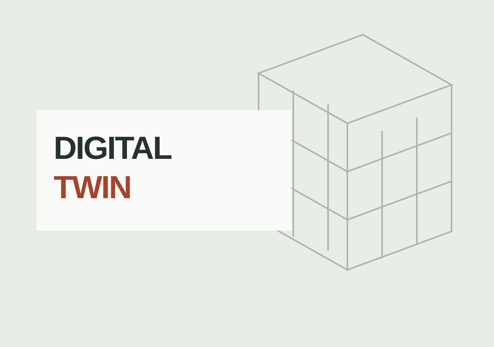
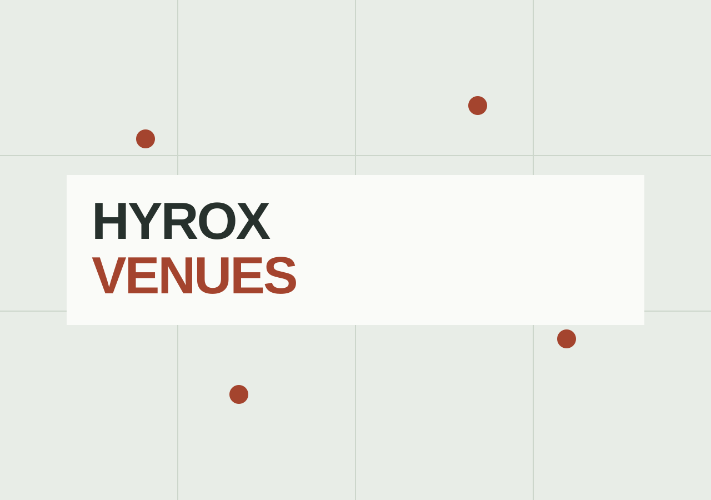

3D benchmark
Digital twin of a building
Compare published building reconstructions and recorded generation metrics.
Games, maps, websites, and small tools. Browse the collection.
GitHub
3D benchmark
Compare published building reconstructions and recorded generation metrics.

Travel website
A website for Apartments Napros in Sabunike, Croatia. Explore the apartments, nearby beaches, and enquire directly about a stay.

Race planner
Explore the HYROX Budapest course in 3D, with stations, facilities, spectator spots, and parking details.

Portfolio website
A portfolio for a singer, model, and traveller. Music, stories, photographs, and a life across languages.
Earlier design
Games
Sudoku, Nonogram, Minesweeper, Wordle, and more. An installable collection of puzzles that works offline.

Travel map
Mark the countries you’ve visited and the places you’d like to go. A personal scratch map in your browser.

Geography game
Find the answer on a world map. Geography questions, distance-based scoring, and a daily challenge.

Health tool
A single-report dashboard for blood test results. Drop a PDF or image to see its markers at a glance.

Health tool
Compare blood markers across reports and dates. Import PDFs or images and follow trends in your browser.
In progress. A multiplayer Bomberman game.